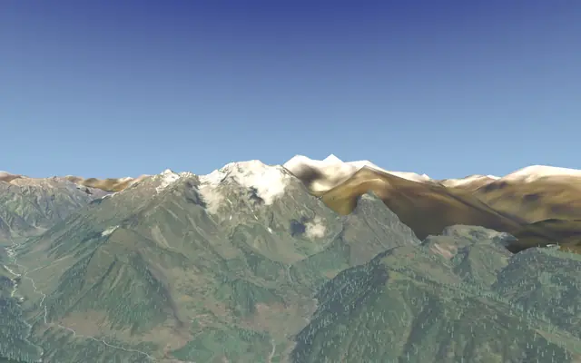

At their best in June
The months each trek's sources call the best.

Prashar Lakeपराशर झील
Himachal · Mandi

Rajmachiराजमाची
Western Ghats · Pune

Beas Kundब्यास कुंड
Himachal · Kullu

Kareri Lakeकरेरी झील
Himachal · Kangra

Bhrigu Lakeभृगु झील
Himachal · Kullu

Ali–Bedni Bugyalआली–बेदिनी बुग्याल
Uttarakhand · Chamoli

Phulara Ridgeफुलारा रिज
Uttarakhand · Uttarkashi

Kheergangaखीरगंगा
Himachal · Kullu

Madmaheshwarमदमहेश्वर
Uttarakhand · Rudraprayag

Panchachuli Baseपंचाचूली बेस कैंप
Uttarakhand · Pithoragarh

Kudremukhಕುದುರೆಮುಖ
Western Ghats · Chikmagalur

Indrahar Passइंद्रहार दर्रा
Himachal · Kangra

Hampta Passहम्टा पास
Himachal · Kullu–Lahaul

Sar Passसर पास
Himachal · Kullu

Doditalडोडीताल
Uttarakhand · Uttarkashi

Gaumukh Tapovanगौमुख–तपोवन
Uttarakhand · Uttarkashi

Kafni Glacierकफनी ग्लेशियर
Uttarakhand · Bageshwar

Kedartalकेदारताल
Uttarakhand · Uttarkashi

Roopkundरूपकुण्ड
Uttarakhand · Chamoli

Rupin Passरुपिन पास
Himachal · Uttarkashi–Kinnaur

Buran Ghatiबुरान घाटी
Himachal · Shimla–Kinnaur

Satopanth Talसतोपंथ ताल
Uttarakhand · Chamoli

Bali Passबाली पास
Uttarakhand · Uttarkashi

Bailey Trail (Tawang)
Northeast · West Kameng–Tawang

Pin Parvati Passपिन पार्वती पास
Himachal · Kullu–Spiti
Also possible in June
Doable, but not the peak season: expect snow, rain or heat, as each trek page explains.

Kalsubaiकळसूबाई
Western Ghats · Ahilyanagar

Harishchandragadहरिश्चंद्रगड
Western Ghats · Ahilyanagar

David Scott Trail
Northeast · East Khasi Hills

Dayara Bugyalदयारा बुग्याल
Uttarakhand · Uttarkashi

Har Ki Dunहर की दून
Uttarakhand · Uttarkashi

Rajgad to Tornaराजगड – तोरणा
Western Ghats · Pune

Kolahoi Glacierकोलाहोई ग्लेशियर
Kashmir & Ladakh · Anantnag

Dzükou Valley
Northeast · Kohima

Tarsar Marsarतारसर मारसर
Kashmir & Ladakh · Anantnag

Pindari Glacierपिंडारी ग्लेशियर
Uttarakhand · Bageshwar

Markha Valleyमारखा घाटी
Kashmir & Ladakh · Leh

Green Lakeग्रीन लेक
Sikkim & Darjeeling · Mangan

Rumtse to Tso Moririत्सो मोरीरी
Kashmir & Ladakh · Leh

Chopta Chandrashilaचंद्रशिला
Uttarakhand · Rudraprayag